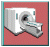
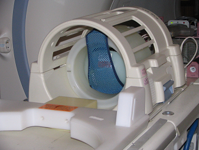
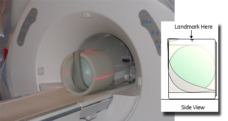
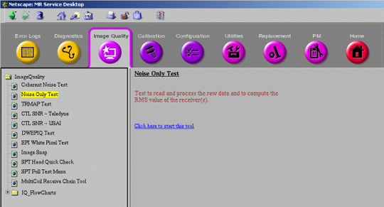
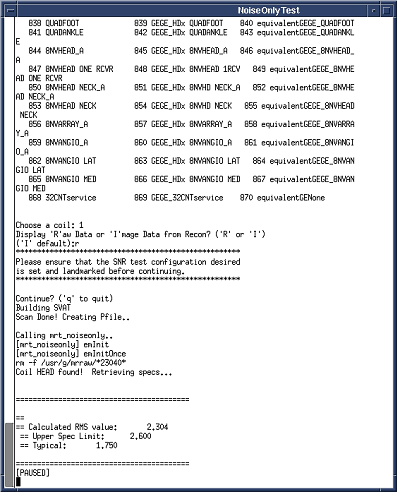
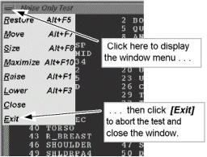

Proprietary to General Electric Company
Direction 5440000, Rev# 5
Signa HDxt Service Methods
Module Version 2.0, Version Date 8/8/07
Proprietary to General Electric Company |
| Required Persons | Preliminary Reqs | Procedure | Finalization |
|---|---|---|---|
| 1 | Not Applicable | 10 mins | Not Applicable |
The Noise-Only Test provides a means to quickly determine whether or not a signal-to-noise (SNR) problem is due to high noise. The only parameter evaluated by Noise-Only Test is the system noise. The RMS noise value reported by the test is taken from the analysis of the raw data (not image data). This leaves the result unaffected by rational scaling and other effects applied to images, making it possible to generate pass/fail criteria for the test. The Noise-Only Test reads the contents of the CoilConfig.cfg file, and will work with any coil. The pass/fail criteria, however, only applies to testing the head and body coil. The test can be run in two display modes: Image Mode, the default mode which facilitates viewing coherent bands or zippers that can drive noise levels higher, or Raw Data Mode, which can be used to check for the presence of spike noise or white pixels in the raw data. To set up and run the Noise-Only Test, three general tasks must be completed:
| NOTE: | The analysis is always performed on the raw data. |
Cancel out of any previous exams. Click the 
The phantom must be positioned and a landmark must be established.
Noise-Only Test must be invoked from the Image Quality option of the CSD.
| Last Update | 08/08/2007 |
Perform Step if running head coil test. Perform Step if you are running the body coil test.
Head Coil Positioning Using Head Coil
Place the head coil on the patient table.
Install the Head Sphere Phantom in the Head Loader.
Place the phantom in the head coil. See Illustration 1.
Illustration 1: Phantom Position in the Head Coil

Landmark on the center of the Head Loader.
Body Coil Phantom Positioning
Place the short body loader and sphere on the patient table. See Illustration 2.
Illustration 2: Short Body Loader And Sphere Setup

Landmark on the center of the short-body loader.
Noise-Only Test Setup
Click the (scan) icon to go to the scan page.
If necessary, click , then click to cancel any previous exam.
| NOTE: | Test functionality and system functionality may be adversely affected if the previous exam is not terminated. |
Click on .
Enter geservice under Patient ID.
Enter 111 under Weight
Noise-Only Test Execution
Click the  (Service
Tools) icon to open the Service Desktop Manager.
(Service
Tools) icon to open the Service Desktop Manager.
Click in the lower part of the Service Desktop Manager if the Common Service Desktop is not already visible.
| NOTE: | It takes a few seconds for the Common Service Desktop to appear. If the Common Service Desktop never appears, then confirm that it isn’t already open and that it hasn’t been dragged partially off the screen or that it isn’t hidden behind another open window. |
Click the (Image Quality) tab at the top of the Common Service Desktop.
Select [Noise Only Test] from the menu on the left side of the screen as shown in Illustration 3.
Illustration 3: NOISE-ONLY TEST WINDOW

Under [Noise Only Test] on the right side of the screen, select [Click here to start this tool]. The Noise Only Test window opens as shown in Illustration 4.
Illustration 4: NOISE-ONLY TEST WINDOW (EXAMPLE)

Set up the screen as described below:
Choose a coil from the list.
Select R to display Raw Data or | to display Image Data (Test always uses Raw data internally)
<Enter> to continue.
After completion, the test displays the calculated RMS noise value, along with the upper spec limit and typical value for the selected coil.
| NOTE: | Choose 'Head' for both old style head coil and split head coil. |
| NOTE: | Noise-Only Test can be aborted at any time by selecting [Exit] from the Noise-Only Test window menu as shown in Illustration 5. |
Illustration 5: ABORTING THE NOISE-ONLY TEST

See Viewing Test Results or if problems arise, see Troubleshooting.
No finalization steps.